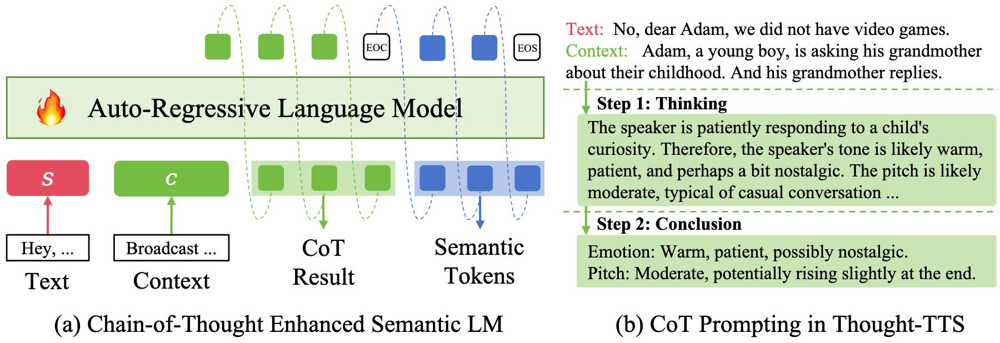

Anonymous Authors
Abstract. Effectively conveying appropriate emotional, tonal, and prosodic styles in complex scenarios is essential for text-to-speech (TTS) systems. While current solutions typically follow: 1) zero-shot TTS systems that derive voice variability from reference speech prompts, or 2) instructed TTS systems that rely on manual textual prompts (descriptions) to control stylistic delivery, both paradigms present fundamental limitations in flexibility and automation. To address this challenge, this paper introduces a novel TTS framework that utilizes chain-of-thought reasoning, called Thought-TTS, to automatically derive detailed style descriptions. Specifically, 1) we propose a chain-of-thought style reasoning TTS model that incorporates a series of intermediate reasoning steps to generate style descriptions that fit the current scenario; 2) We adopt an architecture that decouples semantic and acoustic information to optimize the language model's chain-of-thought reasoning capability; 3) Furthermore, we create CoTSpeech, a new benchmark dataset consisting of 2,500 hours of speech data and 1.1M labels for training and evaluating chain-of-thought enhanced TTS systems. Experimental results show that Thought-TTS successfully leverages chain-of-thought reasoning to comprehend context cues and produce accurate style descriptions through progressive thinking. Moreover, the synthesized speech exhibits strong alignment with CoT-derived style attributes, which enables novel applications in controllable speech generation.

Figure 1: Illustration of chain-of-thought procedure in Thought-TTS. (a) CoT enhanced semantic LM generates fine-grained style descriptions through step-by-step reasoning and predicts the semantic tokens based on the reasoning result. (b) The chain-of-thought prompting procedure. Given text and context, the model analyzes the current context, decomposes the style description prediction problem into intermediate steps, and solves each before giving the final conclusion. ``EOC'' denotes the end of CoT and ``EOS'' denotes the end of semantic tokens.
In this section, we provide the speech samples and the chain-of-thought style reasoning annotations in the CoTSpeech dataset.
| Ground-Truth Speech | Transcription | Context | Chain-of-Thought Style Label | Answer |
|---|---|---|---|---|
In this section, we provide speech samples generated by our Thought-TTS.
# Although all data are sampled at 24k Hz sampling rate in our experiments, we notice that some of the data still only have a 16kHz sampling rate originally. Therefore, in this demo page, we resample all generated 24kHz audio to match the original timbre prompt's sampling rate.
| Transcription | Context | Chain-of-Thought Style Label | Answer | Timbre Prompt | Generated |
|---|---|---|---|---|---|